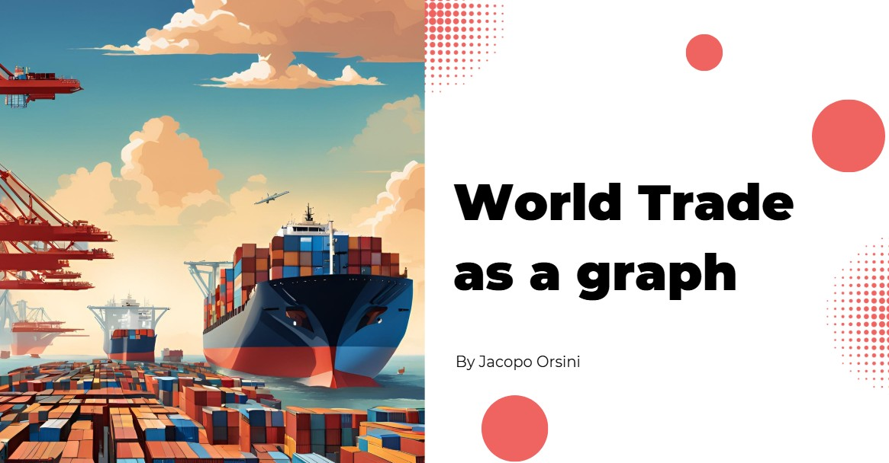
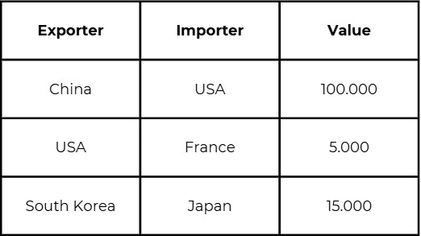
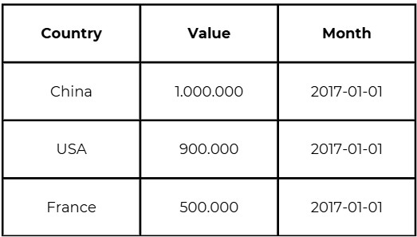

Welcome to the World Trade Graph Project
Project 3: World Trade as a Graph
This project was carried out as part of the Data Driven Modeling of Complex Systems course taught by Professor Walter Quattrociocchi at the University of Rome La Sapienza. The aim of the research is to explore the potential of representing a complex phenomenon as the world trade, the driving force of our economies, through the statistical methodologies provided by complex systems theory. Can such a robust institution be permanently affected by external events? Does it adapt to these influences? These questions will be examined in the subsequent sections of this research.
Dataset Principali
The data that have been used are taken from 2 sources:
1. CEPII Database (2017 - 2022)
The first dataset, sourced from the CEPII Database, spans the years 2017 to 2022 and provides detailed insights into bilateral trade relationships—detailing exporters, importers, and the corresponding trade values. This granular data is instrumental in capturing the intricate flow of goods between nations.
2. World Trade Organisation Data (2027 - 2024)
Complementing this, the World Trade Organisation (WTO) dataset offers a macro-level perspective, featuring aggregated monthly trade data from 2027 to 2024. With key indicators such as country-level trade values and temporal trends, the WTO data facilitates a broader analysis of international commerce and its evolving patterns over time.
Graph features
The analyzed graph exhibits a dense and highly interconnected structure. With 226 nodes and 26,332 arcs, the network reaches a density of 0.5178, meaning that over half of all possible connections exist. France emerges as the most influential node, with a maximum degree of 447, highlighting its central role in the network, while Bonaire Island represents the opposite end of the spectrum with a minimum degree of 41. On average, each node connects with 233 others, reflecting a robust level of interconnectivity. These metrics collectively illustrate a complex system where key nodes significantly shape the overall connectivity and dynamics of the network.
World trade graph representation
It was a challenge to represent a graph with 26.000 arcs, then a solution that has been implemented is to represent direct arcs from a Country A to a Country B if Country A is the biggest seller, the country that has exported the most, to Country B. Also the arcs are coloured according to the continent of origin of the exporter